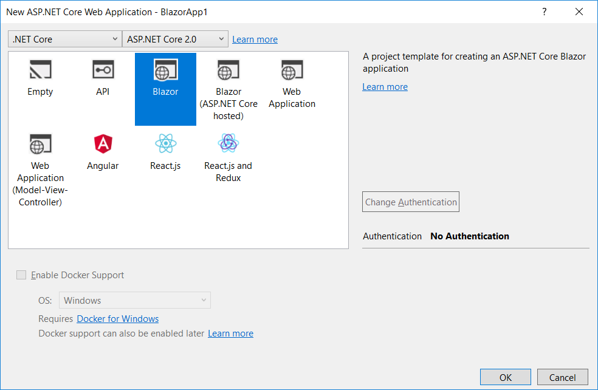
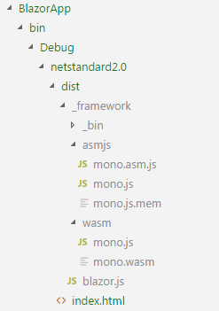
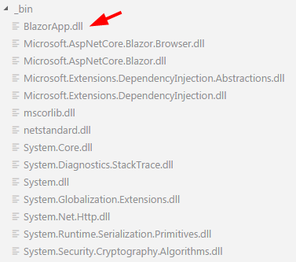
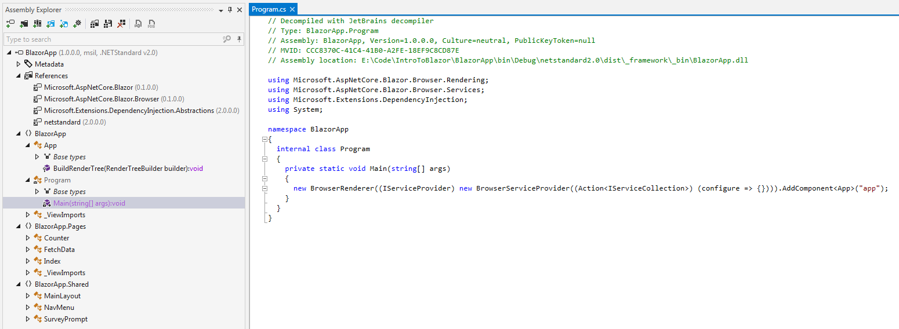

Intro To Blazor
Dave Glick
Twitter: @daveaglick
GitHub: /daveaglick
What Is Blazor?
"Blazor is an experimental .NET web framework using C#/Razor and HTML that runs in the browser with WebAssembly"
https://github.com/aspnet/Blazor
Still experimental, everything in this presentation is subject to change
What Is WebAssembly?
"WebAssembly (abbreviated Wasm) is a binary instruction format for a stack-based virtual machine"
Blazor Architecture
- The Mono C runtime is compiled to WebAssembly
- The Mono IL interpreter is used to evaluate .NET assemblies
- Blazor files are compiled to normal .NET assemblies
- Templates based on Razor Pages
How JavaScript Works

How WebAssembly Works

How Blazor Works

Analogy
React, Angular, Vue.js
Most of the "magic" is being done by WebAssembly and Mono, which are totally distinct from Blazor
JavaScript Interop: Events
To handle a button click...
- The Mono WebAssembly bootstrapper (mono.js) registers a click event handler
- The JS click event is handled by mono.js and passed to the Mono WebAssembly runtime
- The Mono WebAssembly runtime then exposes the event for any .NET handlers like Blazor
JavaScript Interop: Rendering
- Blazor maintains a virtual DOM
- Only the changes are propagated to the browser DOM
- Similar to Vue.js or React
- The Blazor bootstrapper (blazor.js) contains a rendering callback
- Blazor pages invoke the callback with required DOM changes
Getting Started: Prerequisites
- .NET Core 2.1 preview
- Visual Studio 2017 15.7 preview (for VS support)
- ASP.NET Core Blazor Language Services (for VS support)
- Microsoft.AspNetCore.Blazor.Templates (for .NET Core templates)
Visual Studio
File -> New Project -> Web -> ASP.NET Core Web Application
CLI/Visual Studio Code
>dotnet new -i Microsoft.AspNetCore.Blazor.Templates
Getting ready...
Restoring packages for C:\Users\dglick\.templateengine\dotnetcli\v2.1.300-preview1-008174\scratch\restore.csproj...
Installing Microsoft.AspNetCore.Blazor.Templates 0.1.0.
Generating MSBuild file C:\Users\dglick\.templateengine\dotnetcli\v2.1.300-preview1-008174\scratch\obj\restore.csproj.nuget.g.props.
Generating MSBuild file C:\Users\dglick\.templateengine\dotnetcli\v2.1.300-preview1-008174\scratch\obj\restore.csproj.nuget.g.targets.
Restore completed in 1.18 min for C:\Users\dglick\.templateengine\dotnetcli\v2.1.300-preview1-008174\scratch\restore.csproj.
Templates Short Name Language Tags
----------------------------------------------------------------------------------------------
...
Blazor (hosted in ASP.NET server) blazorhosted [C#] Web/Blazor/Hosted
Blazor (standalone) blazor [C#] Web/Blazor/Standalone
...
CLI/Visual Studio Code
dotnet new blazor -o BlazorApp1
cd BlazorApp1
dotnet run
Project File
<Project Sdk="Microsoft.NET.Sdk.Web;Microsoft.NET.Sdk.Razor/2.1.0-preview2-30230">
<PropertyGroup>
<TargetFramework>netstandard2.0</TargetFramework>
<RunCommand>dotnet</RunCommand>
<RunArguments>blazor serve</RunArguments>
</PropertyGroup>
<ItemGroup>
<PackageReference Include="Microsoft.AspNetCore.Razor.Design" Version="2.1.0-preview2-30230" PrivateAssets="all" />
<PackageReference Include="Microsoft.AspNetCore.Blazor.Browser" Version="0.1.0" PrivateAssets="all" />
<PackageReference Include="Microsoft.AspNetCore.Blazor.Build" Version="0.1.0" />
<DotNetCliToolReference Include="Microsoft.AspNetCore.Blazor.Cli" Version="0.1.0" />
</ItemGroup>
</Project>
Packages
- Microsoft.AspNetCore.Razor.Design
Design-time support (Intellisense, etc.) - Microsoft.AspNetCore.Blazor.Browser
Blazor client framework to be deployed to browser - Microsoft.AspNetCore.Blazor.Build
SDK and other build tooling
What Does It Build?


BlazorApp.dll
index.html
<!DOCTYPE html>
<html>
<head>
<meta charset="utf-8" />
<title>BlazorApp</title>
<base href="/" />
<link href="css/bootstrap/bootstrap.min.css" rel="stylesheet" />
<link href="css/site.css" rel="stylesheet" />
</head>
<body>
<app>Loading...</app>
<script src="css/bootstrap/bootstrap-native.min.js"></script>
<script
src="_framework/blazor.js"
main="BlazorApp.dll"
entrypoint="BlazorApp.Program::Main"
references="Microsoft.AspNetCore.Blazor.Browser.dll,Microsoft.AspNetCore.Blazor.dll,Microsoft.Extensions.DependencyInjection.Abstractions.dll,Microsoft.Extensions.DependencyInjection.dll,mscorlib.dll,netstandard.dll,System.Core.dll,System.Diagnostics.StackTrace.dll,System.dll,System.Globalization.Extensions.dll,System.Net.Http.dll,System.Runtime.Serialization.Primitives.dll,System.Security.Cryptography.Algorithms.dll"
linker-enabled="true">
</script>
</body>
</html>
Digging Deeper...
Time for some demos!